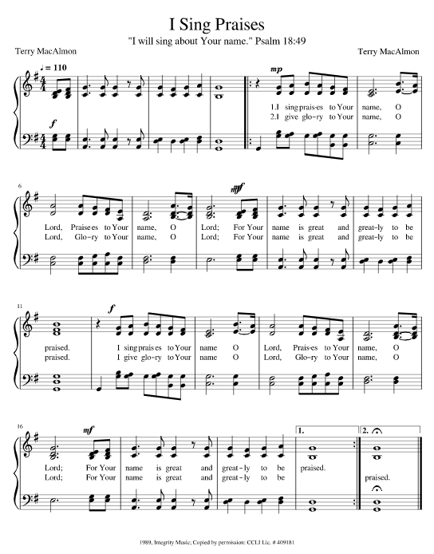

|
|
【我要讚美】 |
|
[ I Sing Praises ] |
我要讚美你聖名，恩主；讚美你聖名，恩主；你的名為大、至偉大受頌讚。 [國語] 我要歌頌你聖名，哦主！ |
|
https://musescore.com/user/30522520/scores/5602038  |
|
|
|
|

-
I Sing Praises to Your Name Terry MacAlmon https://youtu.be/zH3-UNBGBH0 https://youtu.be/P0KI7PVT98I
| Text: | I Sing Praises |
| Author: | Terry MacAlmon |
| Tune: | I SING PRAISES |
| Composer: | Terry MacAlmon |
| Short Name: | Terry MacAlmon |
| Full Name: | MacAlmon, Terry, 1955- |
| Birth Year: | 1955 |
Tune Information
| Title: | I SING PRAISES |
| Composer: | Terry MacAlmon |
| Meter: | Irregular |
| Incipit: | 12321 76322 21765 |
| Key: | A Major |
| Copyright: | © 1989 Integrity's Hosanna! Music |
Terry MacAlmon 1955- Wikipedia
|
Terry MacAlmon
|
|
|---|---|
|
Terry MacAlmon, February 2012
|
|
| Background information | |
| Birth name | Terry MacAlmon |
| Born |
May 12, 1955 Poughkeepsie, New York, U.S. |
| Genres | Contemporary worship music |
| Occupation(s) | Singer, songwriter, musician, author, worship leader |
| Instruments | Vocals, piano, keyboards |
| Years active | 1983–present |
| Labels | Integrity Music, Maranatha! Music, New Glory Music, MacAlmon Music LLC |
| Associated acts | Benny Hinn, Don Moen, Paul Wilbur, Gateway Worship, Nathaniel Bassey, Vocal Majority, Joni Lamb |
| Website |
newglory |
{kind=link}
Terry MacAlmon (born May 12, 1955) is an American Christian singer, songwriter, musician, recording artist, worship leader and author. He is known for writing the popular song 'I Sing Praises', that has been a Top 40 Christian song around the world and is still regularly sung in many churches. The song was published by Integrity Music in 1989 and is included in many modern hymnals. He heads a worship music Christian ministry based in Frisco, Texas and travels leading worship in conferences, retreats, worship seminars, and churches throughout the United States, and internationally.
As of 2019 MacAlmon has sold an estimated number of 2 million albums worldwide[1] and has two gold albums.[2] In 2010 he received the GMA UK Lifetime Achievement Award for Exceptional Contribution to worship music.[3] In 2008 his Holy! was nominated for Instrumental Album of the Year at the 39th Annual Gospel Music Association Dove Awards.[4]
Background[edit]
Early years[edit]
At birth the doctor informed MacAlmon's parents that he would likely not live through his first month, due to Cranial Stenosis (a premature closure of the soft spot in his head). According to his mother, she was pacing the floor with him every day and praying, "Lord, if You let him live, I will give him to You for Your service." Not long thereafter her baby healed, which MacAlmon ascribes to his mother's cry for help. MacAlmon believes that he not only received the gift of life at that time but also a special anointing and gift of music.[5]
At the age of three, MacAlmon's mother began sitting him on the piano bench to occupy him, while she looked after his brothers. Quickly he began to discover the notes of "Jesus Loves Me", a song he had learned in Sunday school. A steady progression took place. By the time he was five, he played his first solo in church.
MacAlmon became the church pianist at the age of 11. Winning state and national talent awards in his denomination became a regular event during his teenage years.
In mid-1973 MacAlmon claims to have had an unusual visitation from God, after an evening service at a youth retreat. He recalls, "It was as if God's presence was sitting on me like a cloud. His presence was so heavy that I physically could not even lift my head. I just knelt and trembled while His Spirit dealt with me. I knew that He was placing His mantle of worship upon me. I have never been the same since that special August night."[6]
Ministry startup[edit]
In the following 17 years, MacAlmon served in music ministry positions for several churches and traveled in concert work across America. After moving his family to Colorado Springs, in December 1990, MacAlmon started a church and soon fell upon hard times. Instead of a successful ministry venture, it became much less than that. It was the start of what MacAlmon calls 'a long season of wilderness'. Despite his efforts to start a church and to organize worship meetings, nobody showed up.
After eight years of trying and waiting on what MacAlmon calls 'the Lord's promotion', he claims to have heard God speaking to him again, in August 1998. He recalls, "God said to gather the worshipers, for He wanted to bring an open heaven to Colorado Springs." However, after so many years of seeing nothing happen, he was reluctant to step out again. Finally, he did launch a weekly noon worship hour on Wednesday's, which became known as "Lunch with the Lord". That turned out to be a success and the meetings were visited by several hundred people each week.[7]
Worldwide publicity[edit]
In 2001 MacAlmon was contacted by tele-evangelist Benny Hinn, who invited him for one of his crusades in Shreveport, Louisiana. Hinn believed that God had raised MacAlmon to lead the church into a season of worship, or as he called it, 'a new era of worship'. During the event Hinn said that MacAlmon's songs were affecting his life, his ministry and his staff, claiming that each of his staff members had MacAlmon's albums.[8]
In the days following, the event was broadcast on Hinn's TV show, This is Your Day, which reached a worldwide audience. From that moment on, MacAlmon's album sales went up drastically and he started to receive invitations from all over the world.
New Glory International[edit]
In April 2010, MacAlmon founded New Glory International, which became his full-time ministry. At the end of that same year he also started to do international events.[9]
In the following decade, MacAlmon has traveled through the United States and all over the world, leading worship and teaching at conferences, retreats, worship seminars and churches of all kinds of different denominations, which he still does this present day. Since the start of New Glory International, MacAlmon has also published several new cd albums and a book.[10]
Sing Over America[edit]
In the course of 2019, MacAlmon said he was searching God for his own nation, the United States. He said that God instructed him to gather the worshipers from coast to coast in Dallas, Texas, for a national worship gathering. At the end of 2019, MacAlmon founded a new ministry, next to New Glory International, which he called Sing Over America, after the eponymous event that he is organizing in May 2020. MacAlmon says he hopes that this will set a series of gatherings in motion throughout the U.S.[11]
During the first Sing Over America event in May 2020, MacAlmon was joined by famous singers and bands, such as Don Moen, Paul Wilbur, Gateway Worship, Nathaniel Bassey, Vocal Majority Joni Lamb, and The Daystar Singers.[12]
Personal life[edit]
In May 2008, MacAlmon announced that he was stepping down from his own ministry after having an extramarital affair.[13][14] After counseling, MacAlmon filed for divorce, which was finalized in April 2009.
In April 2010, after two years of silence, MacAlmon came forward with a letter, announcing that he would return to ministry in May 2010,[15] which resulted in the start of New Glory International.
Early in 2010 MacAlmon met and began to date Liz Valentine of Daytona Beach, Florida. The couple were married in December of that year.[16]
https://en.wikipedia.org/wiki/Terry_MacAlmon